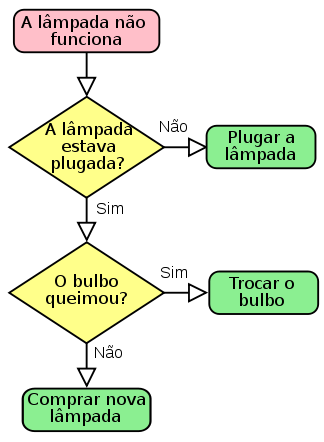

Técnicas de Programação I
- Programa
- Interface homem-máquina. Entrada e Saída
- Dispositivos de Armazenamento: Memória Principal e Secundária
- Conceito de Algoritmo, programa, programa em execução
Created by Fernando Marques
Programa:
lista escrita em que se enumeram (e às vezes se comentam) as partes de que deverá compor-se um espetáculo, concerto, cerimônia etc.; programação.
Programa
- Receita de comida
- Exemplos de Wikihow
- Diagrama de Processos
Interface homem-máquina: Entrada e Saída
- Entrada
- Terminal, Mouse, Arquivos ...
- Saída
- Terminal, Interface Gráfica, Impressora, Arquivos
Dispositivos de Armazenamento: Memória Principal e Secundária
- O que é memória?
- Memória Principal
- Vantagens
- Desvantagens
- Como usamos
-

Memória Secundária
- Vantagens
- Desvantagens
- Como usamos
-

Conceito de Algoritmo, programa, programa em execução
- Instrução
- Algoritmo
- Programa
- Programa em Execução

Fluxograma
Exercícios
- Faça um fluxograma para Trocar um Pneu
- Faça um fluxograma para Construir uma parede
- Você usuará: Tijolo, Cimento,Espátula (colher de pedreiro)
- As etapas são Pegar Tijolo, Passar Cimento com Espátula, Assentar Tijolo, Limpar excesso
- As etapas se repetirão até que o muro termine!